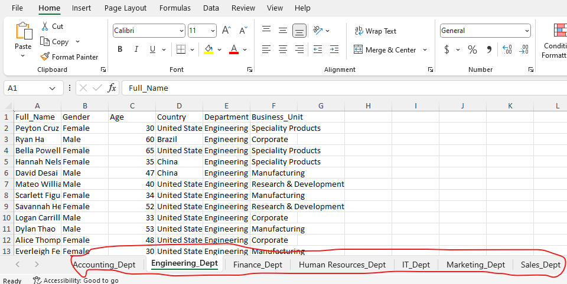
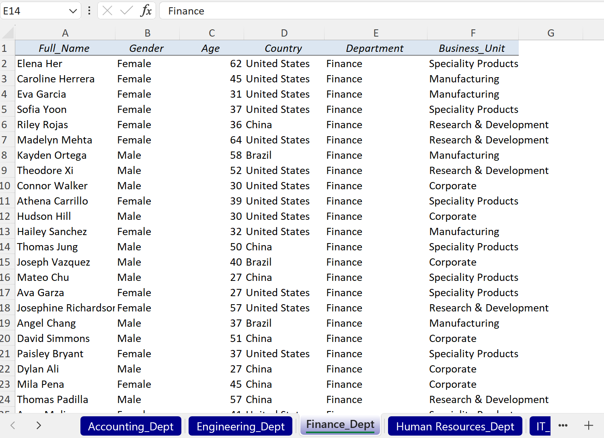

pacman::p_load(odbc, DBI, tidyverse, writexl, openxlsx)Report Manipulation with R
R
Reports Manipulation
Scenario
You have been asked to pull a report of all employees and their respective departments from a database. The user wants this report in an Excel workbook with each department and employees under it on a separate sheet. Assuming we have Accounting, Finance, and Marketing departments, our Excel workbook should have 3 sheets(tabs) representing the 3 departments and their respective employees.
You can pull these reports one by one and add them to an Excel workbook since they are just 3. But what if there are 6 or more departments, that approach will be ineffective, manual, and annoyingly repetitive. Well, we can do pull a single report and easily manipulate it with tidyverse and openxlsx functions.
Load the required packages:
To manipulate our report into a workbook with sheets for each department, we will do the following.
- Pull a single report with all employees and their respective departments and save it.
- Create a workbook
- Apply the nest_by function from dplyr to our report and nest by Department.
- Add sheets to our workbook. We will use department names as our sheet names.
- Write data into each sheets(Department)
- Save your workbook
A primer on nest_by()
First, I will create a simple df and see what happens to it when we apply the nest_by function to it. Below is my simple members df with columns: name, country, and avg_sleep_hours.
# create a simple data frame and call it members
name <- c('Julie', 'Maangi', 'Kevin', 'Mercy', 'Nick', 'Salim')
country <- c('Kenya', 'Kenya', 'Uganda', 'Uganda', 'Tanzania', 'Tanzania')
avg_sleep_hours <- c(8, 7, 7, 9, 6, 9)
members <- data.frame(name, country, avg_sleep_hours)
members name country avg_sleep_hours
1 Julie Kenya 8
2 Maangi Kenya 7
3 Kevin Uganda 7
4 Mercy Uganda 9
5 Nick Tanzania 6
6 Salim Tanzania 9Next, let us see what happens when we nest_by the country column on the members df.
nest_by works the same way as group_by except that it turns our data frame into an object with two columns in this case. The first column is the categories we are nesting by - country and will display the unique categories as our rows. The second column is data from other columns. In summary, all details for members from Kenya will be bundled into a single row, ditto those from Uganda and Tanzania as shown below. With this formating, we can easily write our data for each country into separate sheet.
Setting .keep = TRUE in the code allows us to keep the column(s) we are nesting by.
members |>
nest_by(country, .keep = TRUE)
Apply the concept to our use case
Create a database connection and pull our report
mssql_con <- DBI::dbConnect(drv = odbc::odbc(),
Driver = "SQL Server",
Server = "DESKTOP-CKPR726",
Database = "Employees"
#UID = "user",
#PWD = "password"
) Before pulling the report, we can check how many distinct Departments we have. So we expect 7 sheets in our workbook.
SELECT
DISTINCT
Department
FROM
Job_Desc| Department |
|---|
| Marketing |
| Sales |
| Engineering |
| IT |
| Human Resources |
| Finance |
| Accounting |
Let’s pull a report of all employees and their departments. I will save it as employees_per_dept
SELECT
Full_Name
, Gender
, Age
, Country
, Department
, Business_Unit
FROM
Employee_Info AS EI
LEFT JOIN
Job_Desc AS JD
ON EI.Emp_ID = JD.Emp_ID
WHERE Department IS NOT NULLCreate a workbook, apply the nest_by function, add sheets to our workbook, write data into the respective sheets, and save the workbook.
# initialize the workbook
employees_workbook <- createWorkbook()
# apply nest_by to our report
employees_per_dept |>
dplyr::nest_by(Department, .keep = TRUE) |>
# add worksheets for each department to our workbook
dplyr::mutate(
addWorksheet(employees_workbook, paste0(Department, '_Dept')),
# write data into the respective worksheets(Departments)
writeData(employees_workbook, paste0(Department,'_Dept'), data,)
)
# save workbook
saveWorkbook(employees_workbook, 'employees_per_dept.xlsx', overwrite = TRUE)And we will get our workbook with all the sheets(Departments) as shown below.

Report Customization
We can customize our report by adding alignment, font style, color, tabcolour, and gridlines. There also many styles one can apply.
# define the style of my sheets
hs1 <- createStyle(
fgFill = "#DCE6F1", halign = "CENTER", textDecoration = "italic",
border = "Bottom"
)wb2 <- createWorkbook()
# write into the workbook
employees_per_dept |>
dplyr::nest_by(Department, .keep = TRUE) |>
# add worksheets for each department to our workbook
dplyr::mutate(
addWorksheet(wb2,
paste0(Department, '_Dept'),
gridLines = FALSE,
tabColour = '#00008b'),
# write data into the respective worksheets(Departments)
writeData(wb2,
paste0(Department,'_Dept'),
data,
headerStyle = hs1)
)
# save workbook
saveWorkbook(wb2, 'employees_per_dept2.xlsx', overwrite = TRUE)
Up next, we will see how we can do this using python - with groupby from pandas and a few functions from openpyxl.